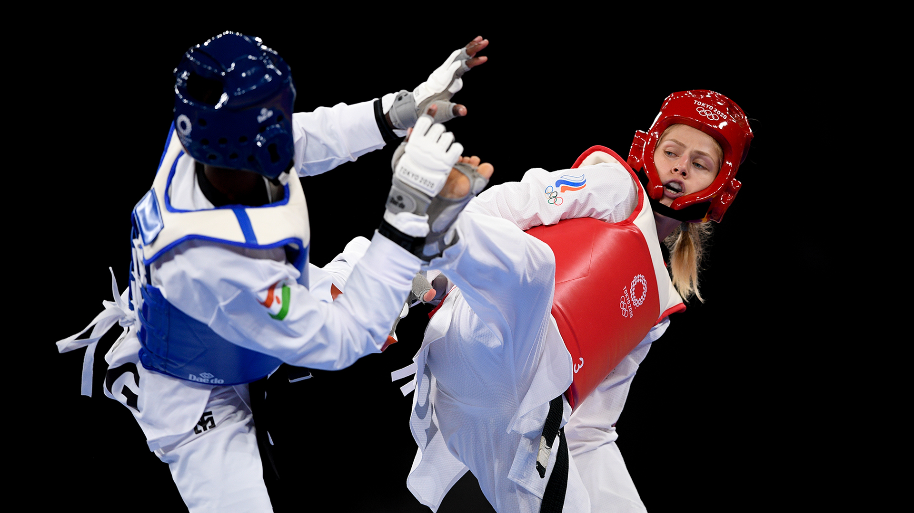
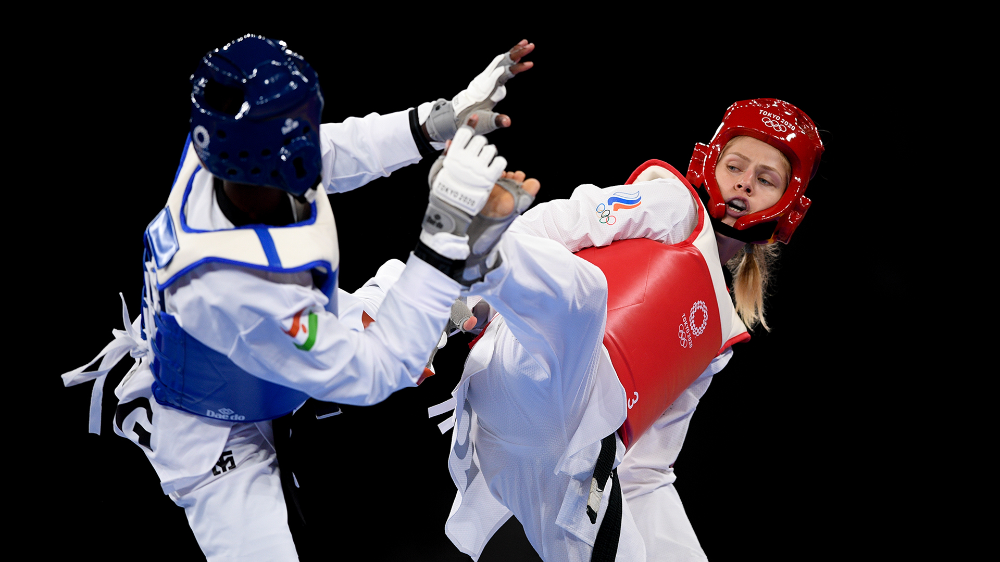
 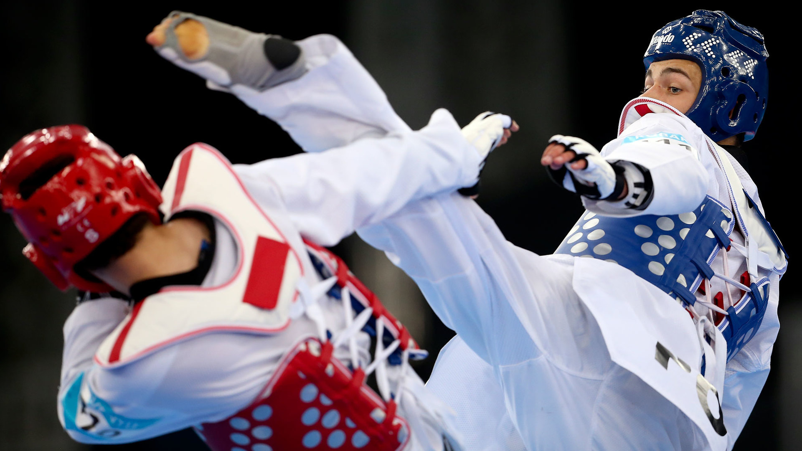
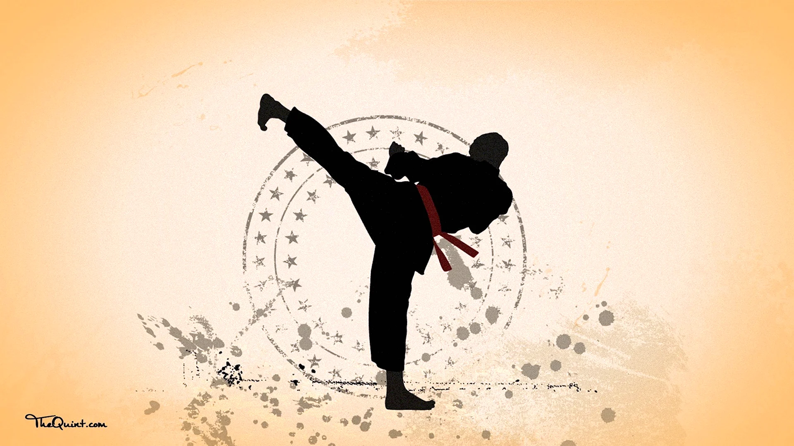
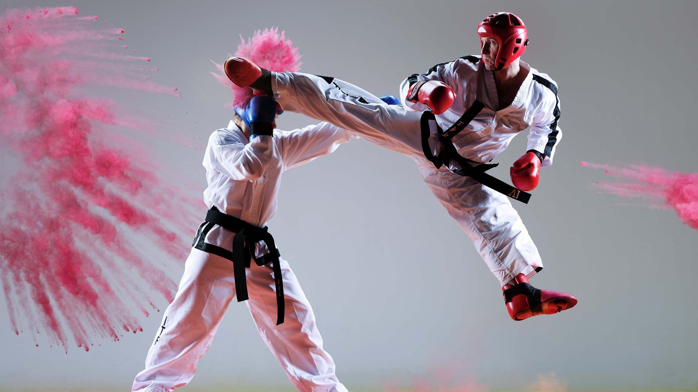
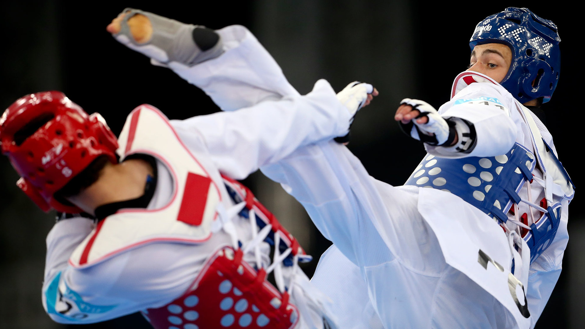
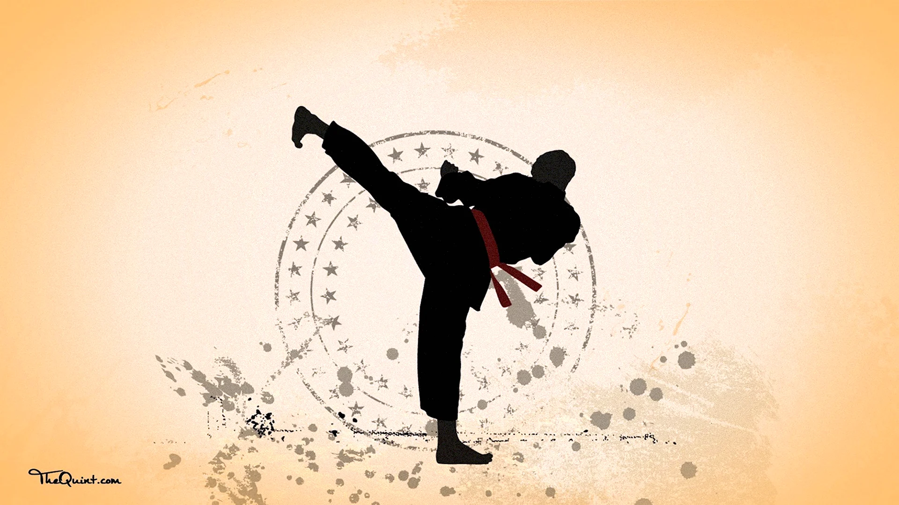
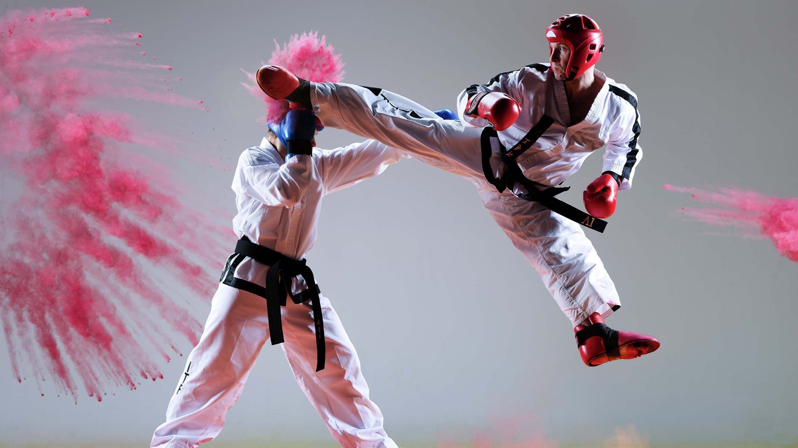
⬆
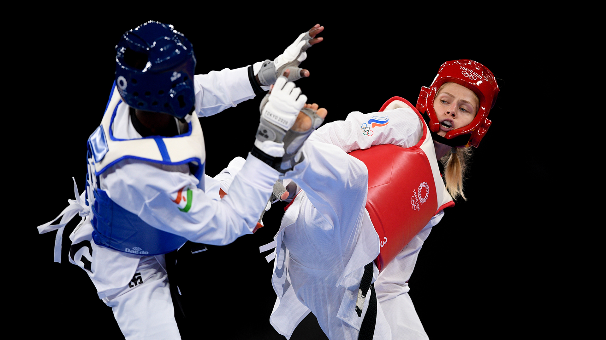
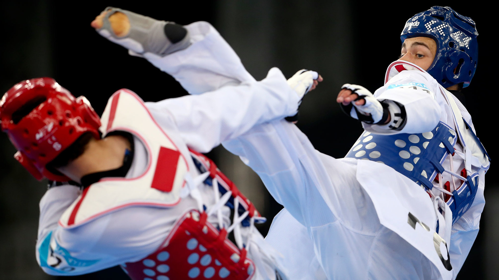
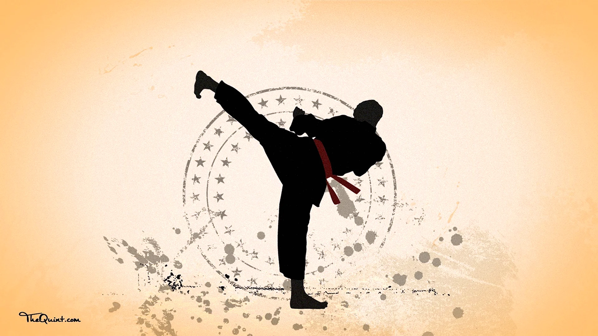
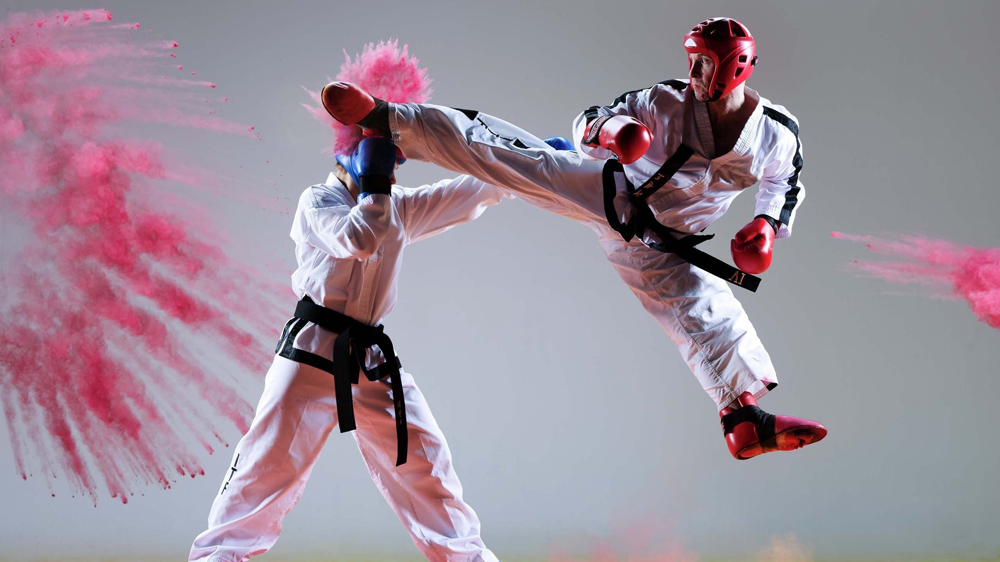
Тхеквондо (кор. 태권도, 跆拳道) — бойове мистецтво, олімпійський вид спорту та національний вид спорту в Південній Кореї. Тхеквондо є одним з найбільш систематизованих і науково обґрунтованих бойових мистецтв світу. Ця дисципліна за допомогою тренувань дозволяє людині зміцнити здоров'я, навчитись самооборони та привчає працювати над саморозвитком духовності й інтелекту.
Історія корейських бойових мистецтв та традицій, на основі яких і було створено сучасне тхеквондо, налічує понад 2000 років. Однак саму назву було офіційно затверджено 11 квітня 1955 року, коли засновник тхеквондо, генерал Чой Хон Хі (9 дан), об'єднав школи корейських бойових мистецтв.
Тае (тхе) означає «удар ногою», квон — «удар рукою», до — «шлях» (див.: дао). Таким чином термін тхеквондо (тхеквон-до) можна перекласти як «шлях ноги та руки через пізнання». Особливу увагу в змагальній практиці тхеквондо приділено ударній техніці ніг, однак це лише частина програми підготовки.
За визначенням самого Чой Хон Хі, «тхеквон-до означає систему духовного тренування і техніку самооборони без зброї, поряд зі здоров'ям, а також кваліфікованим виконанням ударів, блоків і стрибків, що виконуються руками і ногами для ураження одного або кількох суперників».
Тхеквондо тісно пов'язане з історією Кореї. Історію зародження можна розділити на чотири історичні періоди: зародження і розвиток корейських бойових мистецтв в період «трьох держав», бойові мистецтва за часів держави Корьо, часи держави Чосон та період сучасної історії.
У часи Трьох корейських держав були народжені такі єдиноборства як «субак» і «тхеккен», які згодом стали основою для створення тхеквондо. У пізній період історії трьох держав єдиноборства на Корейському півострові користувалися великою популярністю, особливо серед військових. Як наслідок, ці види єдиноборств вивчались у молодіжній організації Хваран.
У період держави Корьо «субак» та «тхеккен» стали розвиватися більш систематично і перейшли на новий рівень. Важливу роль в просуванні по службі військового того часу грав рівень володіння «тхеккен». Простих солдатів, які досягли певного рівня володіння «тхеккен», представляли генералу, який обирав найкращих з них, щоб зробити офіцерами. А змагання з «субак» були досить популярними та видовощними.
У XIV столітті, після заснування держави Чосон, «субак» і «тхеккен» втратили свою популярність. Однак це тривало лише до японських вторгнень наприкінці XVI століття. У відповідь на виклики часу влада Кореї почала вживати заходи з підйому бойового духу країни та розвитку бойових мистецтв. Одним з прикладів є публікація книги «Муедоботхонджі», в якій описані бойові мистецтва того періоду. Четвертий том цієї книги, що має назву «техніка рукопашного бою», включає 38 зображень, що нагадують сьогоднішні позиції і рухи в тхеквондо.
Однак після ряду історичних подій, наприкінці XIX ст. на територію Корейського півострова відбулось вторгнення японців.
У 1910 році Корея втратила незалежність і опинилася під владою японців, які намагалися асимілювати корейців, знищуючи їх культуру, включаючи бойові мистецтва. Варто також відзначити, що у ті часи по всій Японії існувала заборона на навчання будь-яким «ударним» єдиноборствам, яка тривала до 30-х років. Ситуація змінилася після того, як майстер Ґітін Фунакосі переконав імператора Тайсьо у безпечності бойових мистецтв для його влади. Імператор дозволив включити єдиноборства (у 1935 році вони отримали назву «карате») до програми загальноосвітніх шкіл.
Однак після ряду історичних подій, наприкінці XIX ст. на територію Корейського півострова відбулось вторгнення японців.
15 серпня 1945 року, після звільнення країни, корейські бойові мистецтва вступають у нову фазу свого розвитку. Саме в цей період розпочав відроджуватись національний дух та, разом з ним, школи різних бойових мистецтв, які почали виходити з підпілля. Деякий час основними напрямками бойових мистецтв в цих школах були тансудо (танський або китайський кулак — корейське бойове мистецтво, яке зазнало великого впливу китайських єдиноборств) та консудо (корейська назва карате). Всіх майстрів того періоду об'єднувало лише одне — розуміння того, що всі корейські традиції бойових мистецтв (тансудо, консудо, субак, тхеккен та інші) мають бути об'єднані.
Корейська війна внесла корективи у плани, однак, попри складні часи, у цей період була створена Асоціація консудо Кореї. Через численні розбіжності деякі члени даної асоціації вийшли з її складу і організували іншу організацію — Асоціацію тансудо Кореї, яка згодом була офіційно включена до Асоціації аматорського спорту Кореї.
Засновник однієї зі шкіл тансудо Чой Хон Хі (іноді Чхве Хон Хі), генерал південнокорейської армії, користуючись підтримкою президента Кореї Лі Синмана, у 1955 році включає свій стиль бойових мистецтв до програми підготовки військовослужбовців. Генерал розумів, що у корейській армії не можна використовувати китайські і японські назви бойових мистецтв, тому бойове мистецтво, призначене для військовослужбовців, отримало назву тхеквон-до.
Створена у 1959 році Асоціація тхеквон-до Кореї замінила Асоціацію тансудо. Проіснувати в такому вигляді їй вдалося недовго. Генерал Чой втратив підтримку президента країни у 1960 році. Цим скористалися лідери шкіл, незгодні з назвою тхеквондо. Однак, вони не відмовились від тези Чой Хон Хі про те, що назва має відображати традиції Кореї. Була заснована Асоціація субакдо Кореї (субак — одне з традиційних корейських єдиноборств).
Асоціація аматорського спорту Кореї може акредитувати тільки одну асоціацію від одного виду спорту, тому, спільно з міністерством освіти Кореї, ця організація провела збори, на яких було вирішено об'єднати асоціації. І, природно, головним спірним питанням була назва. Було прийнято рішення змішати назви тхеквон-до і субакдо, і, як наслідок, світ побачила Асоціація тхесудо Кореї. За величезний внесок у розвиток корейських бойових мистецтв і спорту генерала Чой Хон Хі було призначено 3-ім президентом Асоціації тхесудо Кореї. Користуючись посадою, він доклав усіх можливих зусиль для того, аби повернути асоціації назву «тхеквон-до». У 1965 році йому це вдалося.
Повернувши назву тхеквондо, Чой Хон Хі пожертвував своїм постом в Асоціації тхеквондо Кореї (KTA — Korea Taekwondo Association). Незабаром, у 1966 році він заснував Інтернаціональну федерацію тхеквондо (ITF — International Taekwon-do Federation). З цього періоду розвитком тхеквондо незалежно одна від одної почали займатися дві організації: Міжнародна федерація Тхеквон-до і Асоціація тхеквондо Кореї (завдяки роботі якої у 1973 році була заснована Всесвітня федерація тхеквондо).